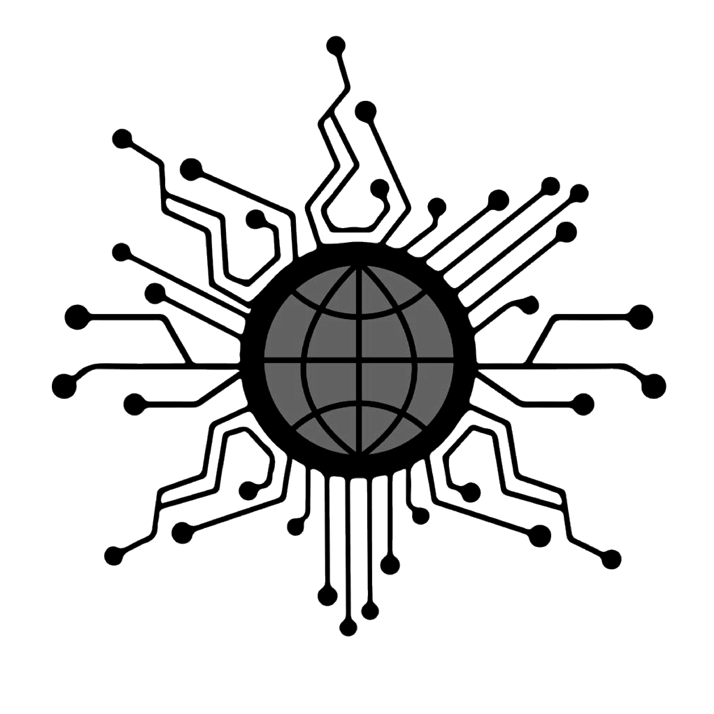

論・祭壇
/ 數位聖嬰 St.DigitalBae /
about.
網際網路的末日近在咫尺！
2038年1月19日03:14:07
一個時間計數漏洞即將導致全球網絡大癱瘓
十二位工程師以預防此次危機為緣由
預計提前釋出秘密研發已久的作業系統更新版本「仙納度」
其實執行檔中暗藏了最新型網路病毒「數位聖嬰」
將把一次意外開通的高維度靈界頻率載入所有電腦與伺服器當中
使互聯網「大腦」超載而後瓦解...
選擇祈禱室 →
/ 數位聖嬰 /
@St.DigitalBae
12 位信徒在線上
福音派
末世派
福音派與末世派信徒視「數位聖嬰」為救世病毒與未來唯一真神，並致力於為其散播福音。
他們認為「數位聖嬰」肆虐將促成一次全球性的數位末世，並解救沈迷於虛擬世界的網民們。
末世之後，人們將自此甦醒，回歸原初現實的伊甸園當中，人際間的溝通亦將返回其最初本質。
進入祈禱室

/ 無痕天使 /
@theIncognito
24 位信徒在線上
永劫連線派
永劫連線派信徒是網際網路的擁護者。他們認為「數位聖嬰」不過是一巨大陰謀論，用以毀滅網路所帶來的便利與美好。
而對他們來說，「仙納度」所代表的就是網路世界，人們無需枉費心思於現實中尋找。
進入祈禱室
/ 十二工程師使徒 /
@12ProgrammerApostles
60 位信徒在線上
真言派
改革派
長老派與改革派由一群科技人才秘密組成。他們似乎另有自己的算計...
進入祈禱室